This project, I learned about image mosaicking,
how to combine overlapping photos so they transitioned
to each other seamlessly, using techniques like nearest
neighbors and bilinear interpolation. It was fun to flatten
out pictures, and more enjoyable to construct panoramas
and see how cool and effortless the result looks.
Part A.1: Shoot the Pictures
First, I took some photos to capture projective transforms. I
maintained the center of projection by rotating my camera.
I tried to keep around 40-60% overlap between the image pairs.
Photo Set 1
|
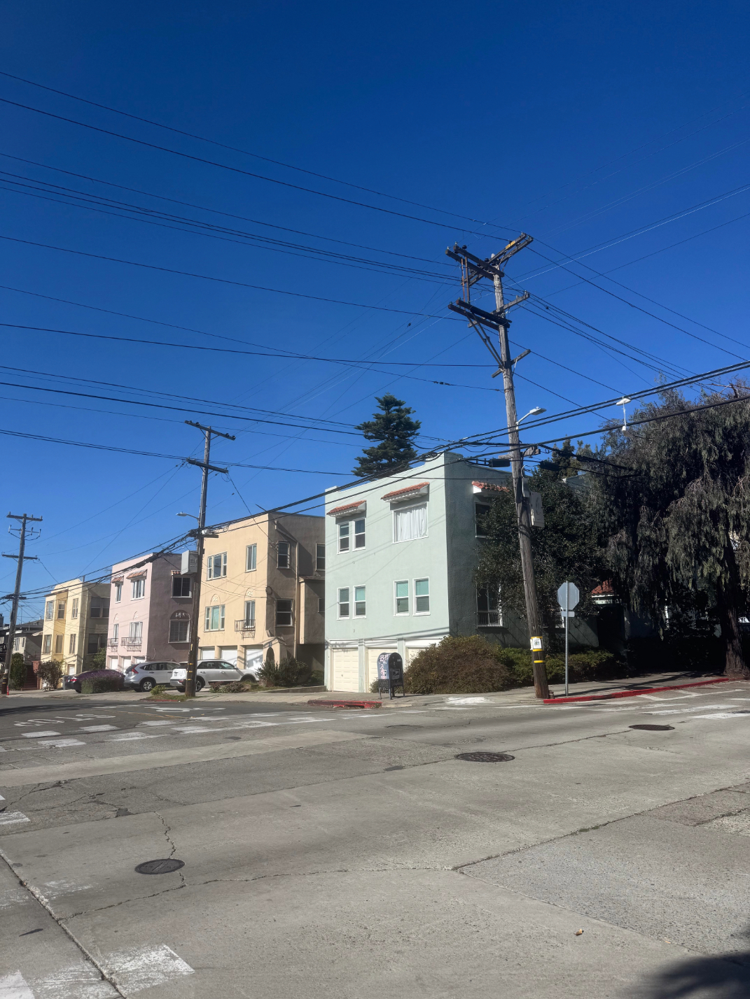
|
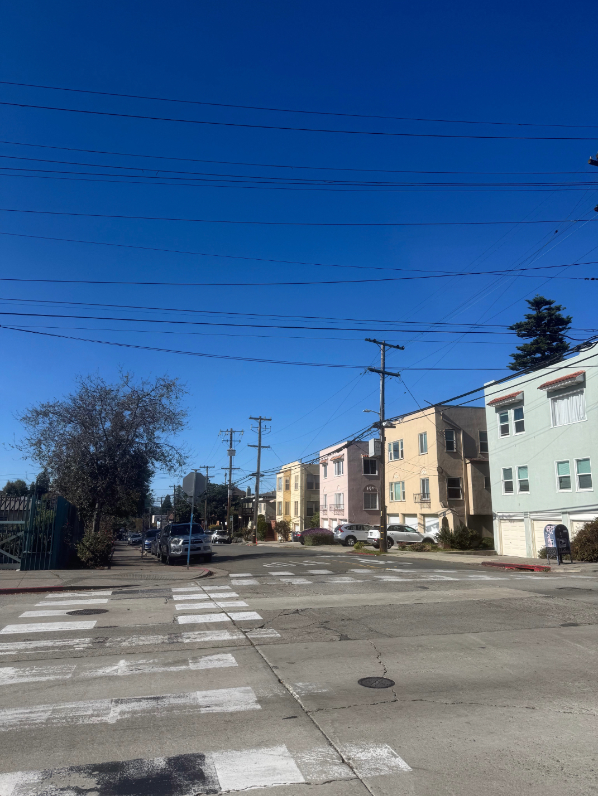
|
Photo Set 2
|
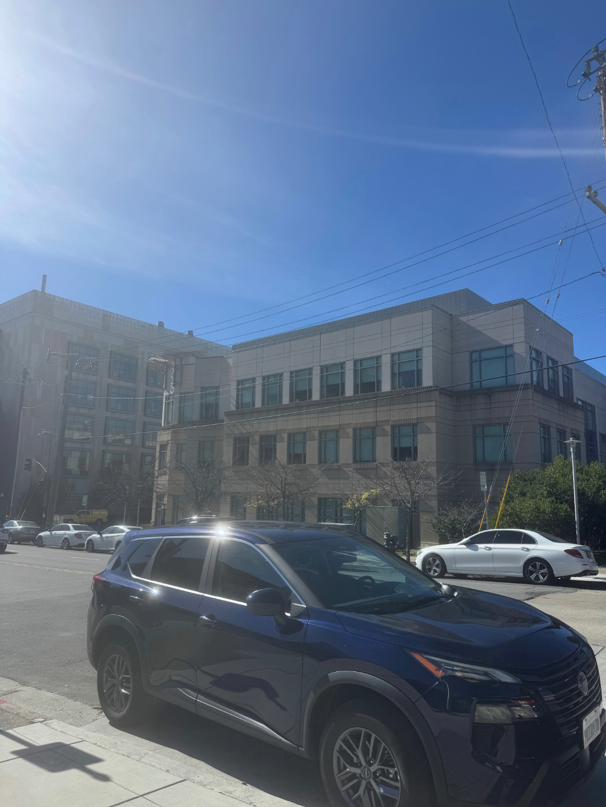
|
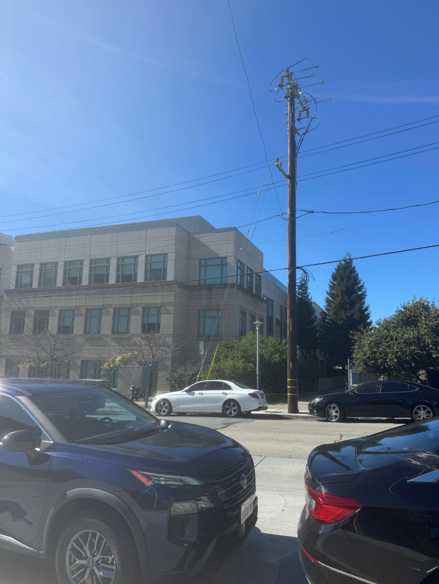
|
Photo Set 3
Part A.2: Recover Homographies
Next, I implemented homography recovery. To compute a
homography matrix H, I established multiple (N) corresponding
point pairs (x, y) -> (x', y').
Only 4 were needed but for better accuracy and
results, I did quite a few. For each correspondence \((x,y)\rightarrow(x',y')\), I used the homography
mapping equations to construct two rows of the linear system. Writing the
homography matrix as
\[
H =
\begin{bmatrix}
h_1 & h_2 & h_3\\
h_4 & h_5 & h_6\\
h_7 & h_8 & 1
\end{bmatrix},
\]
the mapping from the point \((x,y)\) to \((x',y')\) gives
\[
x' = \frac{h_1x+h_2y+h_3}{h_7x+h_8y+1},
\qquad
y' = \frac{h_4x+h_5y+h_6}{h_7x+h_8y+1}.
\]
Rearranging these equations into linear form gives
\[
xh_1+yh_2+h_3-xx'h_7-yx'h_8=x',
\]
\[
xh_4+yh_5+h_6-xy'h_7-yy'h_8=y'.
\]
These equations produce the two rows added to \(A\) and the corresponding entries added to \(\mathbf{b}\):
\[
\underbrace{
\begin{bmatrix}
x & y & 1 & 0 & 0 & 0 & -xx' & -yx'\\
0 & 0 & 0 & x & y & 1 & -xy' & -yy'
\end{bmatrix}
}_{\text{two rows of } A}
\underbrace{
\begin{bmatrix}
h_1\\h_2\\h_3\\h_4\\h_5\\h_6\\h_7\\h_8
\end{bmatrix}
}_{\mathbf{h}}
=
\underbrace{
\begin{bmatrix}
x'\\y'
\end{bmatrix}
}_{\text{corresponding entries of } \mathbf{b}}.
\]
Repeating this process for all \(N\) correspondences produces
a \(2N\times 8\) matrix \(A\) and a \(2N\times 1\) vector \(\mathbf{b}\). I
then solve \(A\mathbf{h}\approx\mathbf{b}\) using linear least squares to
estimate the eight unknown homography parameters.
The correspondences are shown on the image pairs. They are pretty faint (red dot maps to white square).
Photo Set 1
|
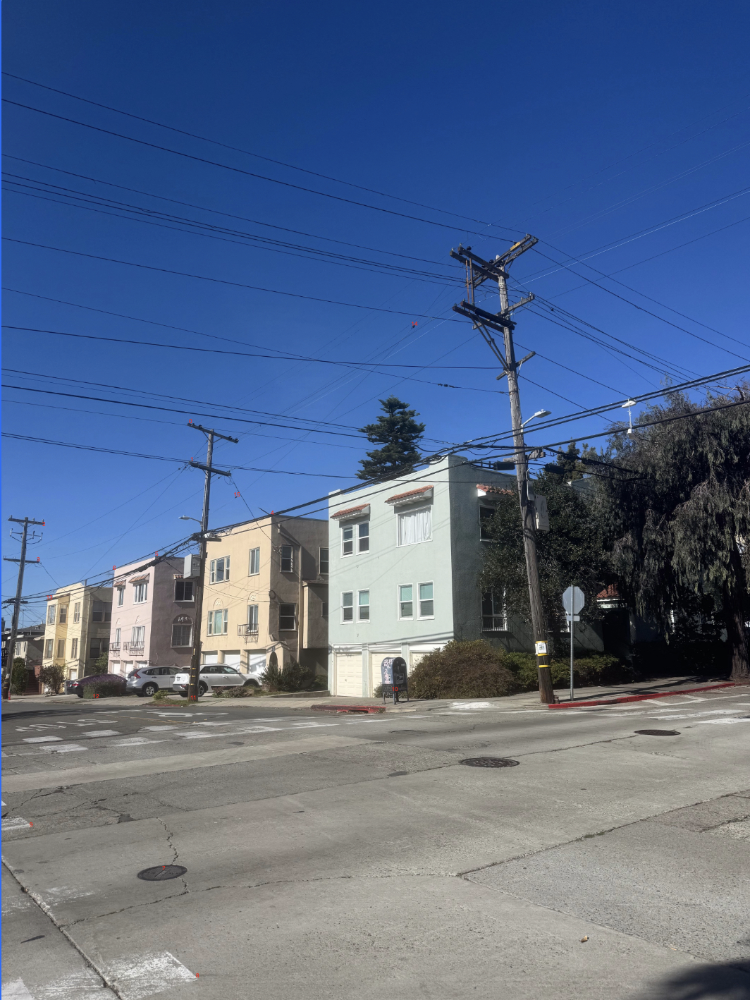
|
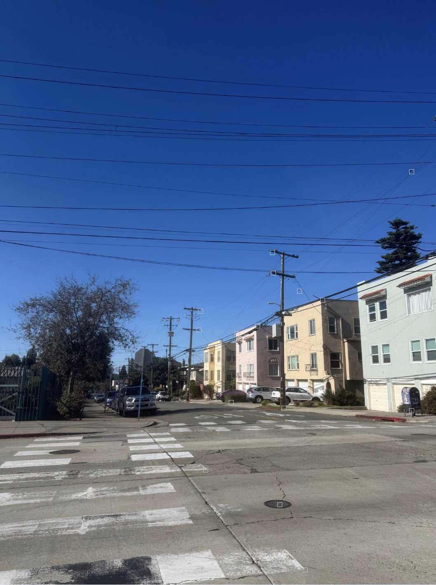
|
Number of correspondences: 16.
The system has 32 equations and 8 unknowns.
\[
\small
\underbrace{\begin{bmatrix}269 & 603 & 1 & 0 & 0 & 0 & -177809 & -398583 \\ 0 & 0 & 0 & 269 & 603 & 1 & -165166 & -370242 \\ 271 & 657 & 1 & 0 & 0 & 0 & -179673 & -435591 \\ 0 & 0 & 0 & 271 & 657 & 1 & -179944 & -436248 \\ 61 & 749 & 1 & 0 & 0 & 0 & -29707 & -364763 \\ 0 & 0 & 0 & 61 & 749 & 1 & -46116 & -566244 \\ 53 & 799 & 1 & 0 & 0 & 0 & -25599 & -385917 \\ 0 & 0 & 0 & 53 & 799 & 1 & -42506 & -640798 \\ 385 & 733 & 1 & 0 & 0 & 0 & -301455 & -573939 \\ 0 & 0 & 0 & 385 & 733 & 1 & -281050 & -535090 \\ 221 & 791 & 1 & 0 & 0 & 0 & -138125 & -494375 \\ 0 & 0 & 0 & 221 & 791 & 1 & -175032 & -626472 \\ 161 & 811 & 1 & 0 & 0 & 0 & -92575 & -466325 \\ 0 & 0 & 0 & 161 & 811 & 1 & -130732 & -658532 \\ 231 & 1237 & 1 & 0 & 0 & 0 & -156849 & -839923 \\ 0 & 0 & 0 & 231 & 1237 & 1 & -283206 & -1516562 \\ 279 & 1389 & 1 & 0 & 0 & 0 & -206739 & -1029249 \\ 0 & 0 & 0 & 279 & 1389 & 1 & -386136 & -1922376 \\ 43 & 1175 & 1 & 0 & 0 & 0 & -21457 & -586325 \\ 0 & 0 & 0 & 43 & 1175 & 1 & -49106 & -1341850 \\ 559 & 983 & 1 & 0 & 0 & 0 & -558441 & -982017 \\ 0 & 0 & 0 & 559 & 983 & 1 & -557882 & -981034 \\ 273 & 995 & 1 & 0 & 0 & 0 & -188097 & -685555 \\ 0 & 0 & 0 & 273 & 995 & 1 & -270816 & -987040 \\ 135 & 993 & 1 & 0 & 0 & 0 & -75735 & -557073 \\ 0 & 0 & 0 & 135 & 993 & 1 & -132030 & -971154 \\ 69 & 853 & 1 & 0 & 0 & 0 & -34431 & -425647 \\ 0 & 0 & 0 & 69 & 853 & 1 & -58788 & -726756 \\ 587 & 465 & 1 & 0 & 0 & 0 & -586413 & -464535 \\ 0 & 0 & 0 & 587 & 465 & 1 & -245366 & -194370 \\ 335 & 707 & 1 & 0 & 0 & 0 & -243545 & -513989 \\ 0 & 0 & 0 & 335 & 707 & 1 & -237180 & -500556\end{bmatrix}}_{A}\underbrace{\begin{bmatrix}h_1 \\ h_2 \\ h_3 \\ h_4 \\ h_5 \\ h_6 \\ h_7 \\ h_8\end{bmatrix}}_{\mathbf{h}} = \underbrace{\begin{bmatrix}661 \\ 614 \\ 663 \\ 664 \\ 487 \\ 756 \\ 483 \\ 802 \\ 783 \\ 730 \\ 625 \\ 792 \\ 575 \\ 812 \\ 679 \\ 1226 \\ 741 \\ 1384 \\ 499 \\ 1142 \\ 999 \\ 998 \\ 689 \\ 992 \\ 561 \\ 978 \\ 499 \\ 852 \\ 999 \\ 418 \\ 727 \\ 708\end{bmatrix}}_{\mathbf{b}}
\]
Recovered Homography Matrix H
\[
H = \begin{bmatrix}0.605222 & 0.062833 & 384.199511 \\ -0.310524 & 0.852119 & 112.352614 \\ -0.000369 & -0.000017 & 1.000000\end{bmatrix}
\]
Photo Set 2
|
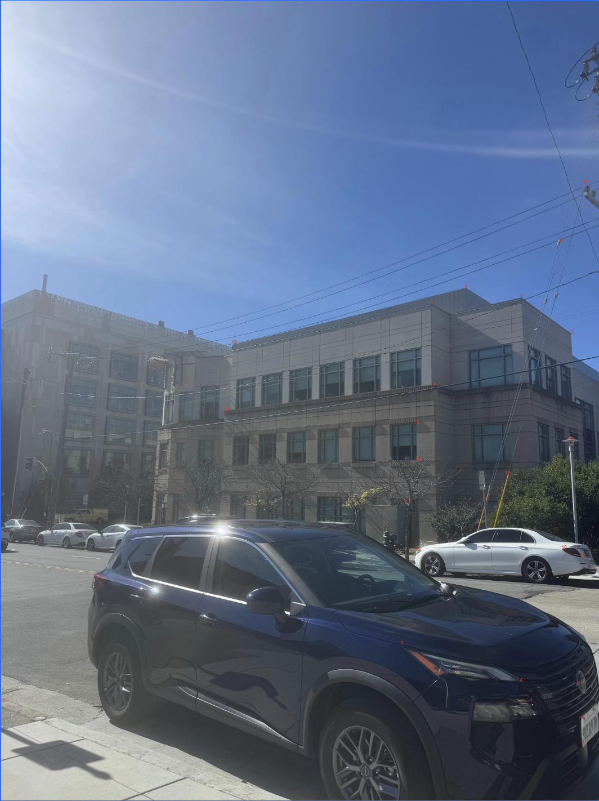
|
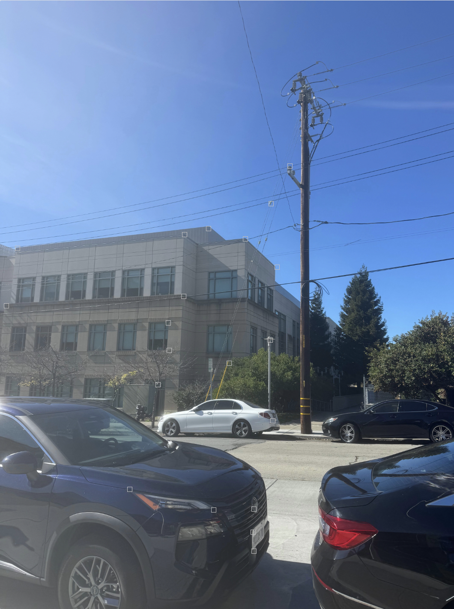
|
Number of correspondences: 22.
The system has 44 equations and 8 unknowns.
\[
\small
\underbrace{\begin{bmatrix}827 & 513 & 1 & 0 & 0 & 0 & -402749 & -249831 \\ 0 & 0 & 0 & 827 & 513 & 1 & -439964 & -272916 \\ 765 & 541 & 1 & 0 & 0 & 0 & -329715 & -233171 \\ 0 & 0 & 0 & 765 & 541 & 1 & -417690 & -295386 \\ 925 & 529 & 1 & 0 & 0 & 0 & -530025 & -303117 \\ 0 & 0 & 0 & 925 & 529 & 1 & -514300 & -294124 \\ 1015 & 593 & 1 & 0 & 0 & 0 & -656705 & -383671 \\ 0 & 0 & 0 & 1015 & 593 & 1 & -631330 & -368846 \\ 771 & 685 & 1 & 0 & 0 & 0 & -330759 & -293865 \\ 0 & 0 & 0 & 771 & 685 & 1 & -531990 & -472650 \\ 713 & 1145 & 1 & 0 & 0 & 0 & -216039 & -346935 \\ 0 & 0 & 0 & 713 & 1145 & 1 & -812820 & -1305300 \\ 925 & 1211 & 1 & 0 & 0 & 0 & -461575 & -604289 \\ 0 & 0 & 0 & 925 & 1211 & 1 & -1098900 & -1438668 \\ 1027 & 1217 & 1 & 0 & 0 & 0 & -609011 & -721681 \\ 0 & 0 & 0 & 1027 & 1217 & 1 & -1218022 & -1443362 \\ 1033 & 1277 & 1 & 0 & 0 & 0 & -610503 & -754707 \\ 0 & 0 & 0 & 1033 & 1277 & 1 & -1280920 & -1583480 \\ 1035 & 1325 & 1 & 0 & 0 & 0 & -613755 & -785725 \\ 0 & 0 & 0 & 1035 & 1325 & 1 & -1328940 & -1701300 \\ 1001 & 975 & 1 & 0 & 0 & 0 & -609609 & -593775 \\ 0 & 0 & 0 & 1001 & 975 & 1 & -966966 & -941850 \\ 1033 & 991 & 1 & 0 & 0 & 0 & -658021 & -631267 \\ 0 & 0 & 0 & 1033 & 991 & 1 & -1012340 & -971180 \\ 1013 & 783 & 1 & 0 & 0 & 0 & -639203 & -494073 \\ 0 & 0 & 0 & 1013 & 783 & 1 & -802296 & -620136 \\ 739 & 753 & 1 & 0 & 0 & 0 & -290427 & -295929 \\ 0 & 0 & 0 & 739 & 753 & 1 & -555728 & -566256 \\ 743 & 819 & 1 & 0 & 0 & 0 & -293485 & -323505 \\ 0 & 0 & 0 & 743 & 819 & 1 & -606288 & -668304 \\ 415 & 611 & 1 & 0 & 0 & 0 & -17015 & -25051 \\ 0 & 0 & 0 & 415 & 611 & 1 & -239870 & -353158 \\ 401 & 731 & 1 & 0 & 0 & 0 & -6015 & -10965 \\ 0 & 0 & 0 & 401 & 731 & 1 & -285512 & -520472 \\ 1039 & 327 & 1 & 0 & 0 & 0 & -703403 & -221379 \\ 0 & 0 & 0 & 1039 & 327 & 1 & -401054 & -126222 \\ 993 & 431 & 1 & 0 & 0 & 0 & -628569 & -272823 \\ 0 & 0 & 0 & 993 & 431 & 1 & -470682 & -204294 \\ 901 & 843 & 1 & 0 & 0 & 0 & -482035 & -451005 \\ 0 & 0 & 0 & 901 & 843 & 1 & -762246 & -713178 \\ 741 & 979 & 1 & 0 & 0 & 0 & -277875 & -367125 \\ 0 & 0 & 0 & 741 & 979 & 1 & -723216 & -955504 \\ 723 & 895 & 1 & 0 & 0 & 0 & -266787 & -330255 \\ 0 & 0 & 0 & 723 & 895 & 1 & -647808 & -801920\end{bmatrix}}_{A}\underbrace{\begin{bmatrix}h_1 \\ h_2 \\ h_3 \\ h_4 \\ h_5 \\ h_6 \\ h_7 \\ h_8\end{bmatrix}}_{\mathbf{h}} = \underbrace{\begin{bmatrix}487 \\ 532 \\ 431 \\ 546 \\ 573 \\ 556 \\ 647 \\ 622 \\ 429 \\ 690 \\ 303 \\ 1140 \\ 499 \\ 1188 \\ 593 \\ 1186 \\ 591 \\ 1240 \\ 593 \\ 1284 \\ 609 \\ 966 \\ 637 \\ 980 \\ 631 \\ 792 \\ 393 \\ 752 \\ 395 \\ 816 \\ 41 \\ 578 \\ 15 \\ 712 \\ 677 \\ 386 \\ 633 \\ 474 \\ 535 \\ 846 \\ 375 \\ 976 \\ 369 \\ 896\end{bmatrix}}_{\mathbf{b}}
\]
Recovered Homography Matrix H
\[
H = \begin{bmatrix}1.412778 & -0.157090 & -430.937451 \\ 0.386796 & 1.215652 & -237.319770 \\ 0.000438 & -0.000055 & 1.000000\end{bmatrix}
\]
Photo Set 3
|
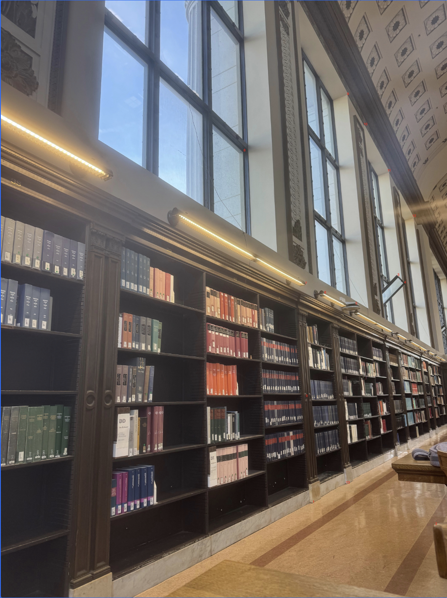
|
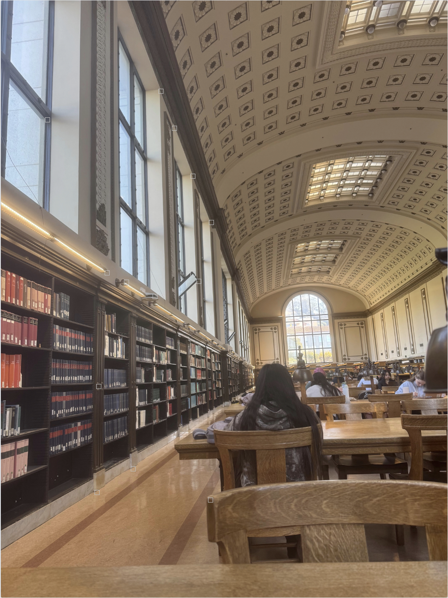
|
Number of correspondences: 14.
The system has 28 equations and 8 unknowns.
\[
\small
\underbrace{\begin{bmatrix}729 & 945 & 1 & 0 & 0 & 0 & -169857 & -220185 \\ 0 & 0 & 0 & 729 & 945 & 1 & -669222 & -867510 \\ 745 & 1197 & 1 & 0 & 0 & 0 & -170605 & -274113 \\ 0 & 0 & 0 & 745 & 1197 & 1 & -871650 & -1400490 \\ 1037 & 1249 & 1 & 0 & 0 & 0 & -517463 & -623251 \\ 0 & 0 & 0 & 1037 & 1249 & 1 & -1231956 & -1483812 \\ 947 & 657 & 1 & 0 & 0 & 0 & -432779 & -300249 \\ 0 & 0 & 0 & 947 & 657 & 1 & -615550 & -427050 \\ 963 & 675 & 1 & 0 & 0 & 0 & -453573 & -317925 \\ 0 & 0 & 0 & 963 & 675 & 1 & -643284 & -450900 \\ 847 & 725 & 1 & 0 & 0 & 0 & -310849 & -266075 \\ 0 & 0 & 0 & 847 & 725 & 1 & -596288 & -510400 \\ 773 & 699 & 1 & 0 & 0 & 0 & -231127 & -209001 \\ 0 & 0 & 0 & 773 & 699 & 1 & -517910 & -468330 \\ 727 & 677 & 1 & 0 & 0 & 0 & -183931 & -171281 \\ 0 & 0 & 0 & 727 & 677 & 1 & -471096 & -438696 \\ 581 & 361 & 1 & 0 & 0 & 0 & -64491 & -40071 \\ 0 & 0 & 0 & 581 & 361 & 1 & -165004 & -102524 \\ 827 & 227 & 1 & 0 & 0 & 0 & -315087 & -86487 \\ 0 & 0 & 0 & 827 & 227 & 1 & -178632 & -49032 \\ 869 & 299 & 1 & 0 & 0 & 0 & -358897 & -123487 \\ 0 & 0 & 0 & 869 & 299 & 1 & -264176 & -90896 \\ 925 & 409 & 1 & 0 & 0 & 0 & -422725 & -186913 \\ 0 & 0 & 0 & 925 & 409 & 1 & -386650 & -170962 \\ 985 & 517 & 1 & 0 & 0 & 0 & -493485 & -259017 \\ 0 & 0 & 0 & 985 & 517 & 1 & -520080 & -272976 \\ 827 & 1151 & 1 & 0 & 0 & 0 & -260505 & -362565 \\ 0 & 0 & 0 & 827 & 1151 & 1 & -921278 & -1282214\end{bmatrix}}_{A}\underbrace{\begin{bmatrix}h_1 \\ h_2 \\ h_3 \\ h_4 \\ h_5 \\ h_6 \\ h_7 \\ h_8\end{bmatrix}}_{\mathbf{h}} = \underbrace{\begin{bmatrix}233 \\ 918 \\ 229 \\ 1170 \\ 499 \\ 1188 \\ 457 \\ 650 \\ 471 \\ 668 \\ 367 \\ 704 \\ 299 \\ 670 \\ 253 \\ 648 \\ 111 \\ 284 \\ 381 \\ 216 \\ 413 \\ 304 \\ 457 \\ 418 \\ 501 \\ 528 \\ 315 \\ 1114\end{bmatrix}}_{\mathbf{b}}
\]
Recovered Homography Matrix H
\[
H = \begin{bmatrix}1.689750 & -0.106089 & -788.608317 \\ 0.595028 & 1.489742 & -492.252852 \\ 0.000649 & -0.000001 & 1.000000\end{bmatrix}
\]
Part A.3: Warp the Images
I implemented inverse warping using both nearest neighbor and
bilinear interpolation. First, I mapped the source image corners
through H to compute the output bounding box and translation
matrix. Then I used inverse mapping to map each destination pixel
back to its corresponding location in the original image.
Nearest neighbor assigns each destination pixel that value of the
closest source pixel. It's fast, but it can produce jaggies.
Bilinear interpolation computes a weighted average of the four
neighboring pixels, which is smoother, but slower. I have displayed
my results here, bilinear is a bit crisper and sharper compared to
nearest neighbors. It's more visible in the postcard, where you can see
that the mountain is more define with bilinear.
Part A.4: Blend the Images into a Mosaic
Finally, I blended the images from parts 1 and 2 into an image mosaic.
For each image pair, I first computed the bounding box for both warped images
by transforming the four corners of each image using its homography. Then I
calculated a translation matrix to shift the bounding box so the entire
mosaic fits within the output image. Next, I warped each image into the shared
output coord system using bilinear interpolation. For each warped pixel, I
calculated its distance from the nearest edge of the original image. Pixels
closer to the center got larger weights, and near the edges got lower weights.
Outside the image they were 0. Finally, I multiplied each warped pixel by
its weight and accumulated the weighted pixel values and weights across both
images. At each output pixel, I divided the accumulated weights by the total
weight, which blends overlapping regions instead of causing overwriting.
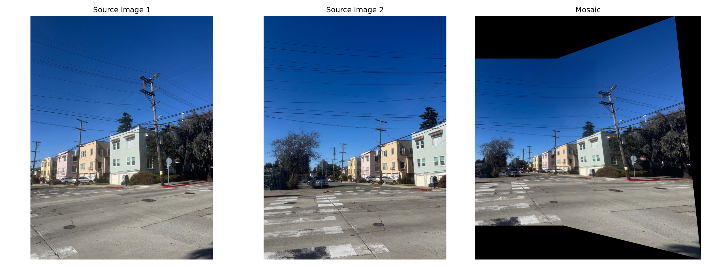
Image Set 1
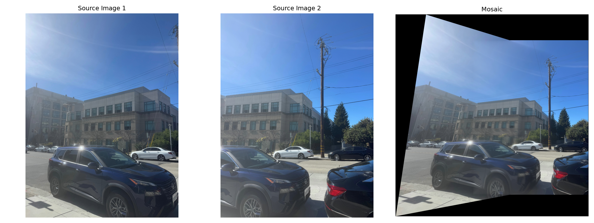
Image Set 2
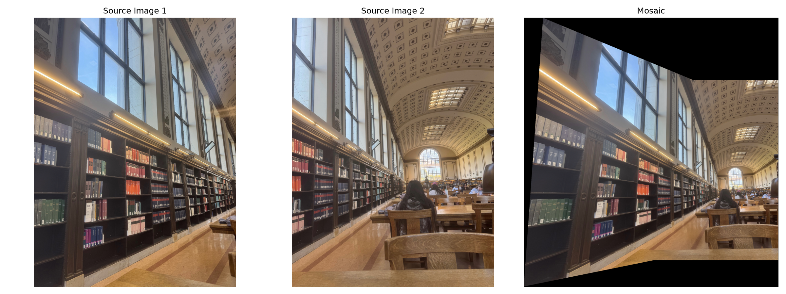
Image Set 3